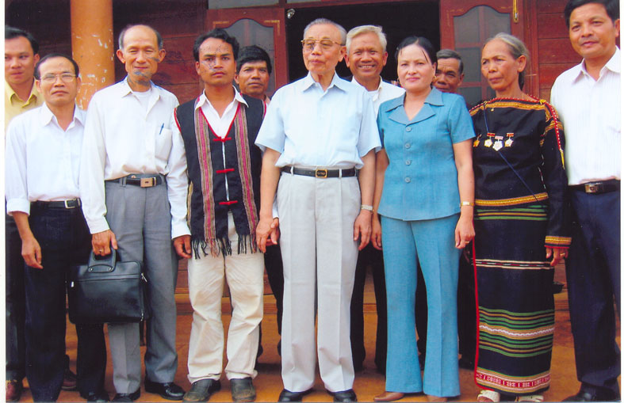
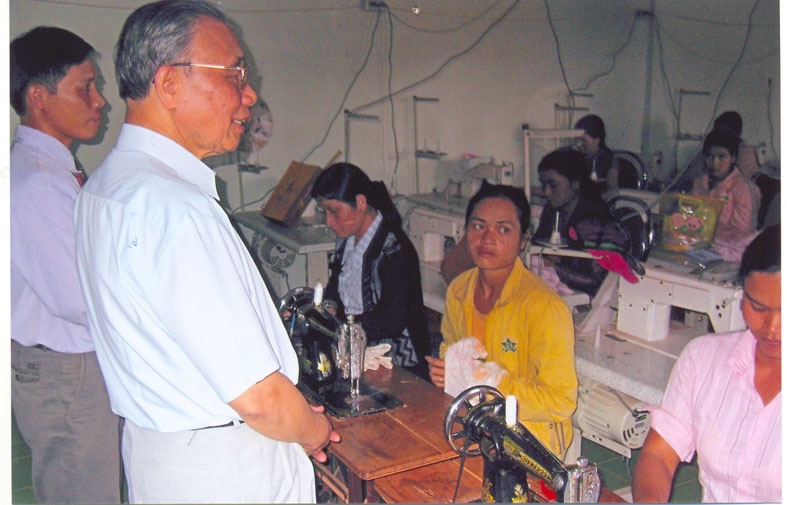

KINH NGHIỆM TRONG CÔNG TÁC KHUYẾN HỌC
Những kinh nghiệm và bài học rút ra từ phong trào xây dựng Trung tâm học tập cộng đồng xã, phường, thị trấn
Nghị quyết Hội nghị Ban chấp hành Trung ương Hội Khuyến học Việt Nam lần thứ 3 (khóa III) khẳng định “tất cả các phương hướng nhiệm vụ đề ra đều tập trung vào mục tiêu xây dựng xã hội học tập từ cơ sở, do đó cần tập trung cố gắng xây dựng và phát triển các Trung tâm học tập cộng đồng ở phường, xã”.
Để công tác xây dựng và phát triển Trung tâm học tập cộng đồng có hiệu quả, nhiều địa phương đã có những sơ kết, tổng kết. Nhân dịp kỷ niệm 10 năm thành lập Hội Khuyến học Việt Nam, 7 năm thực hiện chỉ thị 50 CT/TW của Bộ Chính trị, Ban Văn hóa Tư tưởng Trung ương (nay là Ban Tuyên giáo Trung ương) và Trung ương Hội Khuyến học Việt Nam đã có tổng kết, đánh giá phong trào khuyến học, khuyến tài và xây dựng Trung tâm học tập cộng đồng. Với khía cạnh tổng hợp qua các báo cáo tham luận tại Hội nghị BCH TW Hội Khuyến học lần thứ 3 (khoá III) vừa qua, và qua khảo sát ở một số địa phương, chúng tôi xin nêu những kinh nghiệm và bài học được rút ra từ phong trào xây dựng “Trung tâm học tập cộng đồng” xã, phường, thị trấn để bạn đọc cùng tham khảo:

Ảnh Chủ tịch Hội Khuyến học Việt Nam Nguyễn Mạnh Cầm thăm Trung tâm học tập cộng đồng Buôn Trinh 2 - Đăk Lắk
1-Vai trò lãnh đạo cuả Đảng và chính quyền các cấp về xây dựng “Trung tâm học tập cộng đồng” xã, phường, thị trấn là động lực quyết định sự thành công của mô hình “xã hội học tập”
Nghị quyết Đại hội Đảng lần thứ IX và Đại hội X đã chỉ rõ “đẩy mạnh phong trào học tập trong nhân dân bằng những hình thức chính qui và không chính qui, thực hiện giáo dục cho mọi người”, “xây dựng cả nước trở thành một xã hội học tập, nhằm tạo cho mọi người có cơ hội học tập, học tập ngoài nhà trường - nhất là người lao động, để nâng cao dân trí, bồi dưỡng nhân lực, đáp ứng yêu cầu mới của sự nghiệp công nghiệp hóa-hiện đại hóa đất nước, tạo ra bước đột phá tăng trưởng kinh tế”. Nghị quyết đó đã và đang là đường lối đúng đắn và xuyên suốt trong sự nghiệp giáo dục và quá trình phát triển phong trào khuyến học, khuyến tài và xây dựng “xã hội học tập” ở Việt Nam.
Từ khi có Chỉ thị 50 CT/TW-1999 của Bộ Chính trị về “tăng cường sự lãnh đạo của Đảng đối với công tác khuyến học, khuyến tài”, và Chỉ thị số 29/1999 CT-TTg của Thủ tướng Chính phủ về việc “phát huy vai trò của Hội Khuyến học VN trong phát triển sự nghiệp giáo dục” Hội Khuyến học Việt Nam đã có bước phát triển mạnh mẽ cả tổ chức và chất lượng hoạt động, phong trào khuyến học, khuyến tài đã trở thành một phong trào rộng lớn trong toàn xã hội. Nhiều tỉnh, thành Hội Khuyến học được thành lập chậm, nhưng vào thời điểm có các Chỉ thị, Nghị quyết trên, với quyết tâm của các cấp uỷ và chính quyền, phong trào của các tỉnh, thành đó có những bước nhảy vọt đáng ghi nhận như các tỉnh miền Trung, Tây Nguyên và các tỉnh miền núi phía Bắc …
Sau khi khi tổng kết chỉ thị 50 CT/TW và kỷ niệm 10 năm thành lập Hội Khuyến học Việt Nam, Ngày 13 tháng 4 năm 2007, Bộ Chính trị ban hành chỉ thị 11 CT/TW “về tăng cường sự lãnh đạo của Đảng đối với công tác khuyến học, khuyến tài, xây dựng xã hội học tập” (thay thế chỉ thị 50CT/TW) có ý nghĩa chiến lược lớn trong thời đại công nghệ thông tin đang bùng nổ, nền kinh tế trí thức đang là xu thế của mọi quốc gia,. Chỉ thị nhấn mạnh về “xây dựng xã hội học tập” trong bối cảnh nước ta đang hội nhập sâu vào nền kinh tế thế giới vừa là nhu cầu cấp thiết vừa là xu thế cạnh tranh về trí tuệ, nhân lực mà Việt Nam đang cần phải vượt lên. Chúng ta tin tưởng Chỉ thị 11 CT/TW sẽ đưa đến những thành tựu vô cùng quan trọng cho việc hoàn thành mục tiêu “xây dựng mô hình xã hội học tập ở Việt Nam vào năm 2010”.
Kinh nghiệm cho thấy khi cấp ủy và chính quyền các cấp nhận thức rõ tầm quan trọng của “xã hội học tập”, thực sự quan tâm và chỉ đạo sát sao, biết đưa các Nghị quyết của Đảng và chính sách của Nhà nước vào cuộc sống, thì những nơi đó phong trào khuyến học, khuyến tài và mô hình “xã hội học tập” được phát triển mạnh, hoạt động của “Trung tâm học tập cộng đồng” mang lại hiệu quả cao.
2- Vai trò tham mưu và tổ chức thực hiện của Hội Khuyến học là nhân tố quan trọng, Hội phải thực sự là nòng cốt trong xây dựng mô hình “xã hội học tập”.
Để đi đến thống nhất chủ trương và quyết tâm của các cấp ủy và chính quyền về xây dựng Trung tâm học tập cộng đồng xã, phường, thị trấn, hầu hết Hội Khuyến học các cấp đã tích cực phối hợp với ngành GD & ĐT để tham mưu cho cấp ủy. Trước hết các cấp lãnh đạo Hội xác định đúng vị trí, vai trò, trách nhiệm của mình là xây dựng Hội phải gắn liền với việc xây dựng “xã hội học tập”. Hội đã chủ động và thực sự là nòng cốt, liên kết với các tổ chức xã hội, là hạt nhân qui tụ, tập hợp lực lượng làm nhiệm vụ khuyến học, khuyến tài, chủ động tổ chức và triển khai xây dựng mô hình XHHT từ cơ sở để phục vụ đắc lực cho nhiệm vụ chính trị của mỗi địa phương. Qua khảo sát khoảng 30 tỉnh, thành trong cả nước về công tác khuyến học, khuyến tài và xây dựng “Trung tâm học tập cộng đồng”, vai trò tham mưu và tổ chức thực hiện của các cấp Hội đối với xây dựng phong trào khuyến học, khuyến tài, xây dựng “Trung tâm học tập cộng đồng” luôn được coi là một nhân tố quan trọng, được cấp ủy và chính quyền các cấp đánh giá cao, được các tầng lớp nhân dân ghi nhận và đồng tình hưởng ứng.
3- Sự phối hợp hành động giữa các tổ chức, các ban ngành trong công tác tuyên truyền vận động góp phần nâng cao nhận thức, thúc đẩy quá trình triển khai và xây dựng mô hình “xã hội học tập” từ cơ sở.
Dưới sự lãnh đạo, chỉ đạo của các cấp ủy Đảng, chính quyền, Hội Khuyến học các cấp đã phối hợp chặt chẽ với ngành Giáo dục và Đào tạo, Mặt trận Tổ quốc, các ban ngành, các tổ chức xã hội cùng vào cuộc từ việc tuyên truyền đến phát động phong trào, triển khai công tác khuyến học, khuyến tài, đặc biệt là xây dựng Trung tâm học tập cộng đồng.
Truyền thống hiếu học có thể nói nó như một di sản văn hóa đã có sẵn trong dân, khi được Đảng và chính quyền phát động, các ban ngành nỗ lực tham gia, đi đầu trong việc xây dựng phong trào, quần chúng nhân dân sẽ hăng hái hưởng ứng, vì đó là đạo lý, là truyền thống, là nghĩa vụ nhưng cũng là quyền lợi của mỗi người, mỗi nhà. Việc gần 5 triệu gia đình đăng ký “gia đình hiếu học”, 8500 xã phường trong cả nước đã xây dựng được “Trung tâm học tập cộng đồng” đã chứng minh điều đó.

Ảnh Chủ tịch Hội KHuyến học Việt Nam thăm cơ sở dạy nghề của Trung tâm học tập cộng đồng Buôn Trinh 2 - Đăk Lăk
4- Có cơ chế tổ chức lãnh đạo, quản lý điều hành Trung tâm học tập cộng đồng hợp lý, thống nhất.
Để Trung tâm học tập cộng đồng hoạt động đúng hướng, đúng mục đích, thường xuyên, lâu dài bền vững, thực sự góp phần thực hiện nhiệm vụ chính trị-kinh tế trước mắt và lâu dài của địa phương, bộ máy tổ chức, lãnh đạo và quản lý “Trung tâm học tập cộng đồng” phải được hoàn chỉnh và thống nhất từ tỉnh xuống đến xã, phường. Hầu hết các “Trung tâm học tập cộng đồng” tiêu biểu của các tỉnh, thành như ở Thái Bình, Ninh Bình, Nam Định, Hà Nam, Hải Dương, Hưng Yên, Bắc Ninh, Thanh Hóa, Nghệ An, Hà Tĩnh, TP. Hồ Chí Minh, Đà Nẵng, một số tỉnh, thành Đồng bằng Sông Cửu Long, các tỉnh miền núi phía Bắc như Bắc Giang, Vĩnh Phúc, Bắc Cạn, Sơn La, Yên Bái… hoạt động có hiệu quả đều là những Trung tâm có mô hình tương tự :
+ Đảng ủy cơ sở trực tiếp lãnh đạo, chính quyền cơ sở trực tiếp quản lý.
+ Ngành Giáo dục & Đào tạo thực hiện quyền quản lý nhà nước về chuyên môn nghiệp vụ, thông qua Ban Giám đốc Trung tâm.
+ Hội Khuyến học cơ sở giữ vai trò nòng cốt trong công tác tham mưu, xây dựng phong trào và vận động quần chúng.
+ Các tổ chức chính trị và lực lượng xã hội chủ động kết hợp, tự giác và gương mẫu cùng cấp ủy, chính quyền, Hội khuyến học đứng ra thực hiện.
Ban quản lý Trung tâm học tập cộng đồng trong đó thường có một Thường trực cấp ủy hoặc chính quyền có đủ năng lực để chỉ huy trực tiếp, ngoài ra còn có lãnh đạo các ngành, các tổ chức chính trị xã hội của các thôn, bản là những người có tâm huyết với công việc và được quần chúng tín nhiệm. Ban Giám đốc Trung tâm thường xuyên điều hành hoạt động gồm từ 2-3 người, mỗi người đều được phân công phụ trách các mảng công việc cụ thể.
5- Xây dựng chương trình, kế hoạch học tập cụ thể, nội dung học tập phù hợp và thiết thực, hình thức tổ chức học tập đa dạng, chất lượng giảng dạy ngày một nâng cao đã thu hút được nhiều người tham gia, mang lại hiệu quả lớn.
Về nội dung học tập, các Trung tâm học tập cộng đồng nhìn chung đã bám sát nhiệm vụ chính trị, những vấn đề bức xúc của địa phương để xây dựng nội dung chương trình học tập phù hợp và thiết thực. Nội dung học tập được các Trung tâm thực hiện theo định hướng gồm 4 nhóm:
+ Nội dung khoa học kỹ thuật sản xuất với phương châm “cần gì học nấy”, “học trước khi làm”.
+ Nội dung văn hóa, thể thao, sức khỏe, đời sống, môi trường .
+ Những vấn đề thời sự, chính sách, pháp luật nhằm phục vụ nhiệm vụ chính trị kịp thời.
+ Nội dung học văn hóa cơ bản, tin học, ngoại ngữ : từ bậc thấp là xóa mù chữ , dạy tiếng dân tộc (thuộc các tỉnh miền núi phía Bắc và miền Trung, Tây Nguyên), đến nâng cao bậc học phổ thông, Đại học, đặc biệt là tin học và ngoại ngữ, đáp ứng cho cả cán bộ quản lý, doanh nghiệp và nông dân, các chủ trang trại nâng cao năng suất vật nuôi, cây trồng, nâng cao chất lượng sản phẩm, tham gia các hoạt động dịch vụ thương mại và thị trường xuất khẩu.
Hình thức học tập đa dạng: học tập trung tại hội trường, học thực tế ngoài cánh đồng, học ở ngay hộ gia đình sản xuất giỏi, các Trung tâm học tập cộng đồng được đưa về thôn, bản , nhà văn hóa, nhà sinh hoạt cộng đồng, kết hợp với các chương trình khuyến nông, khuyến lương, khuyến lâm…thu hút đông đảo các tầng lớp nhân dân, các dân tộc ít người ở vùng sâu, vùng xa, tổ chức các cuộc thi, tổ chức tham quan những mô hình tiên tiến, tham quan thực tế trong và ngoài địa phương.
Huy động được đội ngũ giáo viên, giảng viên hướng dẫn đủ mạnh cho các nội dung chủ yếu. Đội ngũ này là những cán bộ, giáo viên đương chức, cán bộ về hưu tại địa phương có chuyên môn, năng lực và tâm huyết, ngoài ra tùy các chủ đề học tập mà Trung tâm mời các chuyên gia, các nhà khoa học, các cán bộ chuyên môn của Trung ương, của tỉnh, huyện về tham gia giảng dạy, hướng dẫn.
6- Để xây dựng, duy trì và phát triển Trung tâm học tập cộng đồng không thể thiếu sự hỗ trợ tài chính và cơ sở vật chất của chính quyền xã, phường, đặc biệt là cơ chế hỗ trợ tài chính của nhà nước.
Kinh nghiệm của một số tỉnh, ngay từ bước đầu thành lập các Trung tâm học tập cộng đồng, cấp ủy và chính quyền các, xã, phường, thị trấn đã giành cho Trung tâm được quản lý, sử dụng cơ sở vật chất của địa phương như hội trường, nhà văn hóa, câu lạc bộ, các khu trung tâm của xã, phường, thôn, bản với các phương tiện dùng cho việc giảng dạy và học tập, đặc biệt một số nơi Ban đièu hành Trung tâm có văn phòng riêng, nhiều nơi có thư viện, có phương tiện nghe-nhìn, có dụng cụ trực quan, có ao, vườn, ruộng thực nghiệm…
Nguồn kinh phí để xây dựng cơ sở vật chất, mua sắm sách báo, tài liệu, dụng cụ và phương tiện hoạt động, học tập… của Trung tâm chủ yếu là phát huy nguồn nhân lực của toàn xã hội, đồng thời dựa vào ngân sách địa phương, một phần là do hỗ trợ của các ngành, các tổ chức xã hội, doanh nghiệp, cá nhân và các chương trình, dự án đầu tư cho cơ sở. Trong khi nhà nước chưa có cơ chế hỗ trợ tài chính cho các Trung tâm học tập cộng đồng, việc các địa phương và Tỉnh chủ động hỗ trợ về cơ sở vật chất và kinh phí (tuy còn rất hạn chế), đã góp phần cho việc duy trì và phát triển các Trung tâm học tập cộng đồng ngày càng đi vào ổn định và chất lượng. Thực hiện chỉ thị 11CT/TW ngày 13/4/2007 của Bộ Chính trị, chúng ta tin tưởng Nhà nước sẽ có cơ chế hỗ trợ tài chính thỏa đáng để các Trung tâm học tập cộng đồng có thêm sức sống hoạt động lâu dài và đạt hiệu quả.
Ngoài ra, việc sơ kết, tổng kết, đánh giá, biểu dương khen thưởng kịp thời đã đem lại những kinh nghiệm phong phú để nhân rộng điển hình, tạo điều kiện để phát triển và tiến tới hoàn thiện dần mô hình “xã hội học tập”.
Những kinh nghiệm và bài học được rút ra từ các Trung tâm học tập cộng đồng đã khẳng định chủ trương của Đảng và Nhà nước về phát triển Trung tâm học tập cộng đồng xã, phường, thị trấn là đúng đắn, là cơ sở cho việc xây dựng mô hình “xã hội học tập” với điều kiện nền kinh tế nước ta. Hoạt động của các Trung tâm có hiệu quả đã và sẽ góp phần tích cực thực hiện các mục tiêu phát triển kinh tế-xã hội của địa phương, của đất nước. Trung tâm học tập cộng đồng là mô hình chuyển giao kiến thức khoa học kỹ thuật trực tiếp, rộng rãi, nhanh nhất đến người lao động, là nơi trang bị kiến thức về cuộc sống cho cộng đồng, góp phần đào tạo nhân lực, bồi dưỡng nhân tài, nâng cao mặt bằng dân trí. Từ nội dung và phương thức hoạt động của các trung tâm học tập cộng đồng đã tập hợp và qui tụ các lực lượng xã hội, góp phần củng cố và nâng cao chất lượng của các tổ chức chính trị và xã hội ở cơ sở, đẩy mạnh các phong trào thi đua của địa phương, đưa chủ trương, chính sách của Đảng và Nhà nước đến trực tiếp người lao động, góp phần ổn định an ninh - chính trị, giữ gìn truyền thống văn hóa và đoàn kết trong làng, xã, và khu dân cư. /.
Lương Thanh Sở
TW Hội KHVN